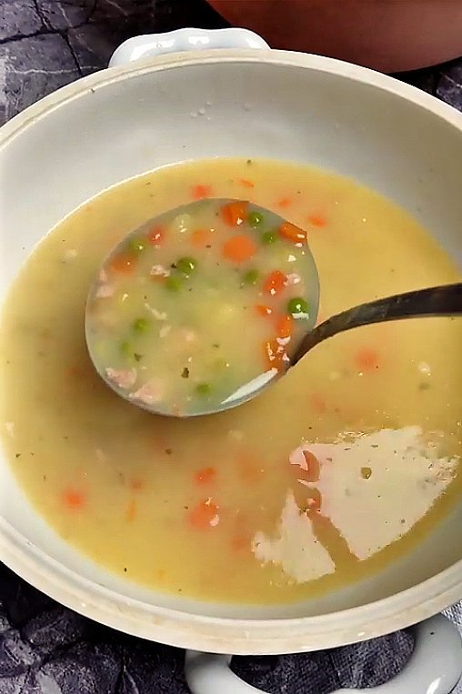

Corba

Obicna corba koju moze svako da napravi.
Napraviti od sastojaka u frizideru, ne mora nista specijalno.
Sastojci
- 1 glavica crnog luka, manjaIsckati crni luk sitno
- 300 gr mesa po izboru
- 400 gr mešanog povrća bilo da je sveže ili zamrznuto
- 100 ml ulja ili bilo koje masnoće
- začini po izboru ( suvi, biber, so, peršunov list
Nacin pripreme
- Isckati crni luk sitno
- dodati mu ulje i malo vode pa prvo ga malo prokuvati
- Dodati baš sitno iseckano meso, dodati vode i nastaviti kuvanje.